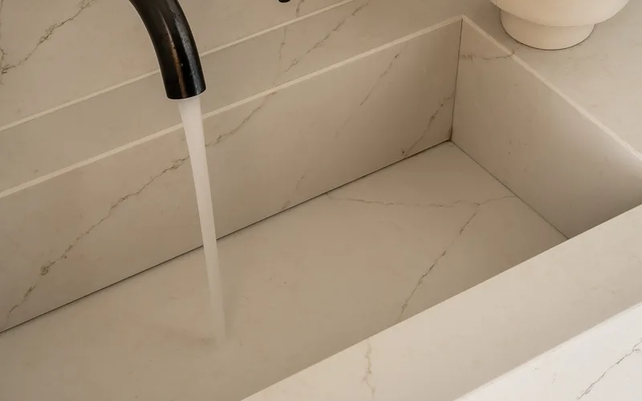
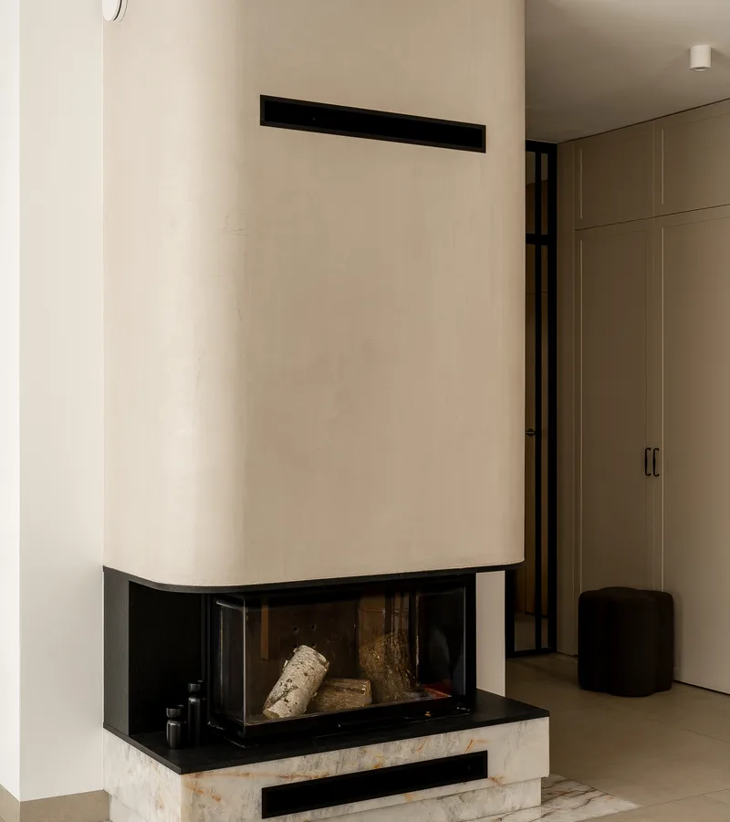

Nasze materiały
Nowoczesne materiały kompozytowe łączące piękno naturalnego kamienia z zaawansowaną technologią — nieporowate, odporne i piękne.

Aglomarmur to materiał kompozytowy składający się z naturalnych odłamków marmuru połączonych żywicą poliestrową. Łączy elegancki wygląd marmuru z większą odpornością na plamy i zarysowania.
Dostępny w szerokiej gamie kolorów i wzorów. Idealny na blaty, parapety i posadzki — tam, gdzie liczy się estetyka i praktyczność w codziennym użytkowaniu.
Materiały kompozytowe to przyszłość nowoczesnych wnętrz.

Kwarcogranit (kwarc kompozytowy) to materiał składający się w ponad 90% z naturalnego kwarcu. Jest niezwykle twardy, odporny na zarysowania, plamy i wysokie temperatury.
Dostępny w jednolitych kolorach i wzorach imitujących kamień naturalny. Idealny wybór na blaty kuchenne, blaty łazienkowe i powierzchnie robocze wymagające intensywnego użytkowania.

Spieki kwarcowe to najnowocześniejszy materiał na rynku kamieniarskim. Produkowane w temperaturze ponad 1200°C, są nieporowate, odporne na UV, plamy, zarysowania i substancje chemiczne.
Dostępne w wielkoformatowych płytach, idealne na blaty, ściany, fasady, posadzki i meble. Spieki oferują nieskończone możliwości aranżacyjne przy minimalnej konserwacji.

Dekton to ultracompaktowa powierzchnia łącząca technologię produkcji szkła, porcelany i kwarcu. Materiał o zerowej porowatości, odporny na gorąco, zimno, zarysowania i promienie UV.
Idealny na blaty kuchenne, łazienkowe, fasady budynków i posadzki wewnętrzne oraz zewnętrzne. Dekton to przyszłość materiałów wykończeniowych.
Zapraszamy do współpracy
Skontaktuj się z nami — doradzimy najlepsze rozwiązanie dla Twojego projektu. Oferujemy bezpłatną wycenę i profesjonalne doradztwo.
Skontaktuj się